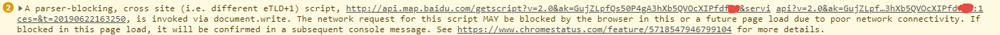

当页面引入百度地图时，谷歌浏览器的控制台会弹出一个警告信息，错误提示如下图所示：

解决方案如下：
把api引用url里面的 api 改为 getscript
将代码：
<script type="text/javascript" src="http://api.map.baidu.com/api?v=2.0&ak=GujZLpfQs50P4gA3hXb5QVOcXIPfdfxx">修改为：
<script type="text/javascript" src="http://api.map.baidu.com/getscript?v=2.0&ak=GujZLpfQs50P4gA3hXb5QVOcXIPfdfxx">完...